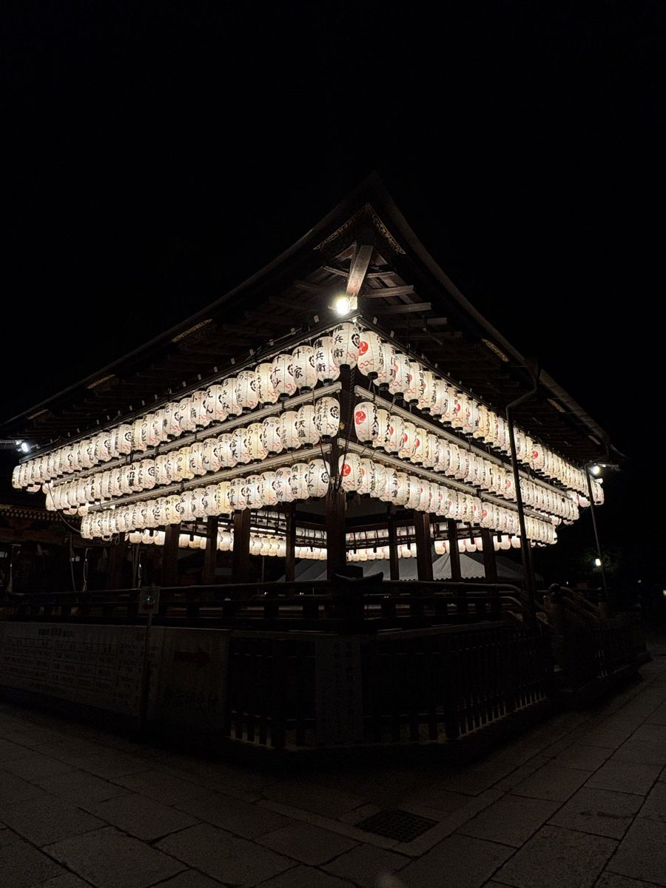
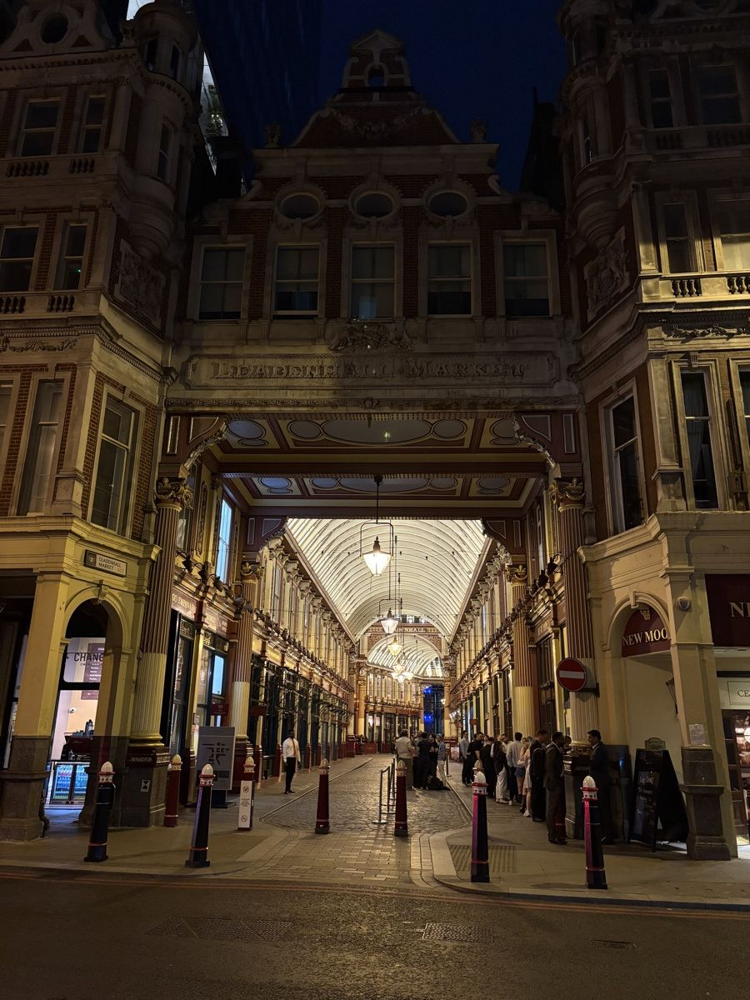
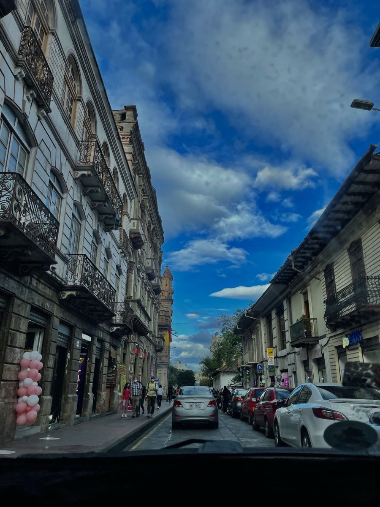
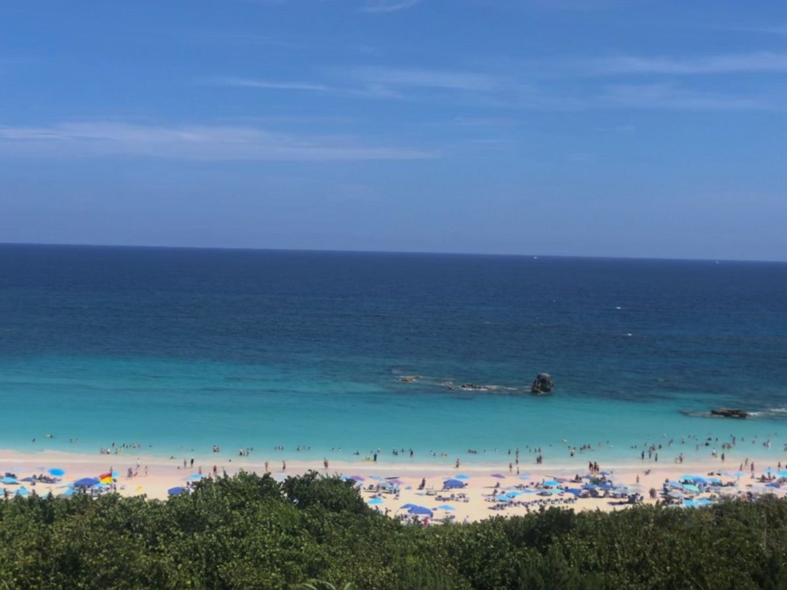
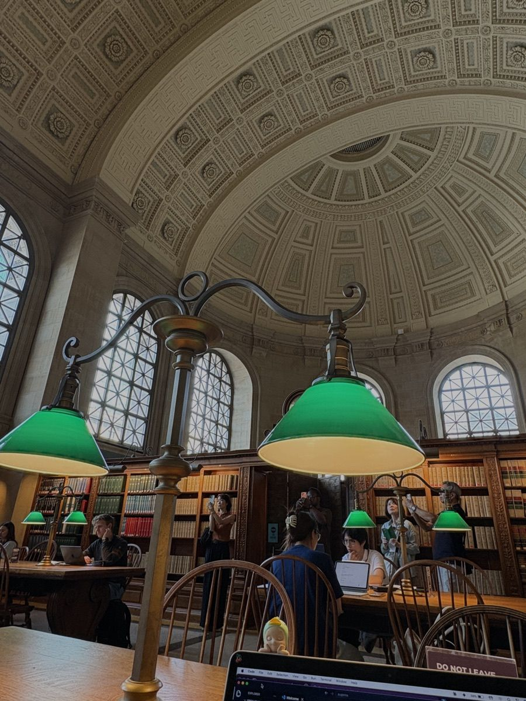
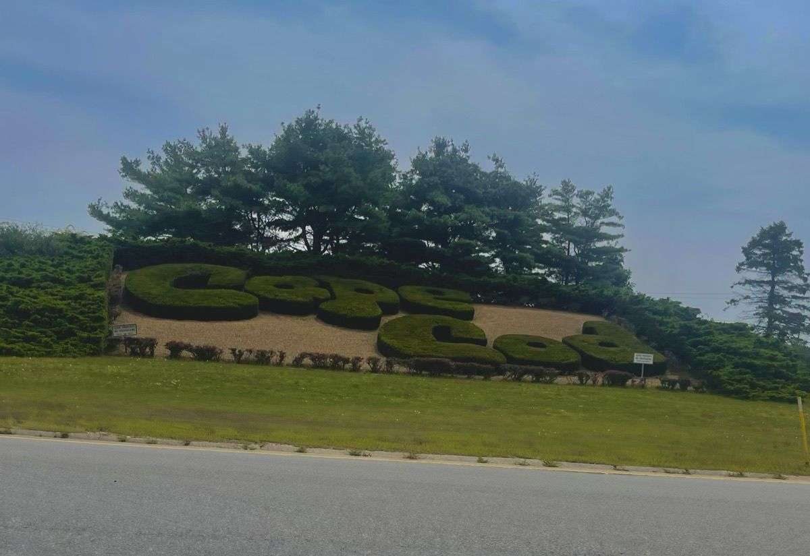
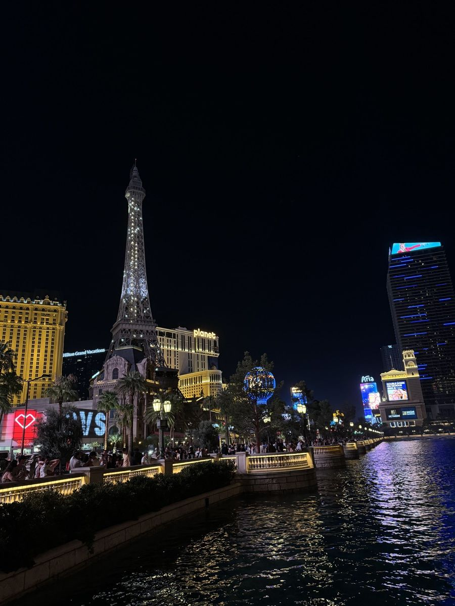
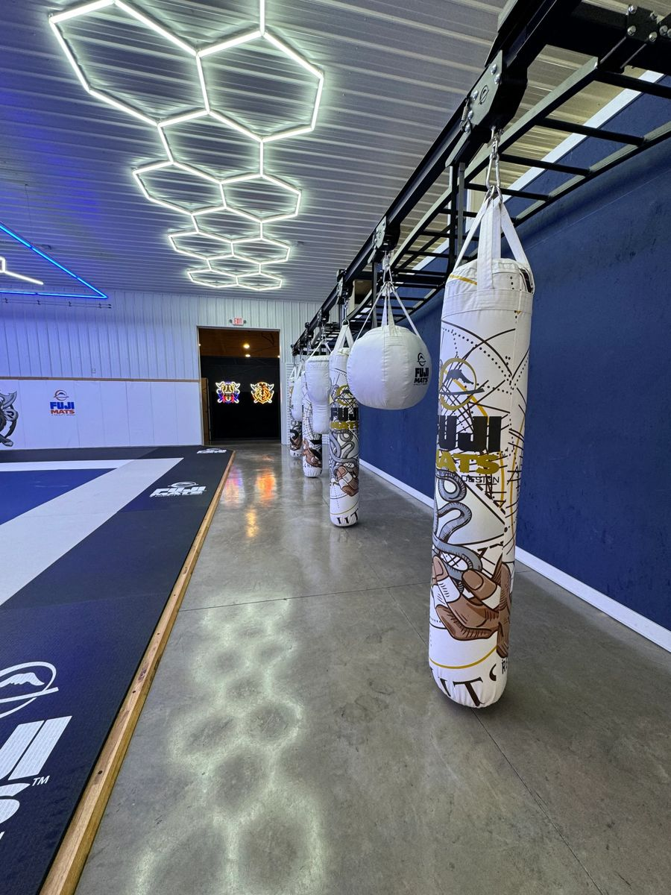
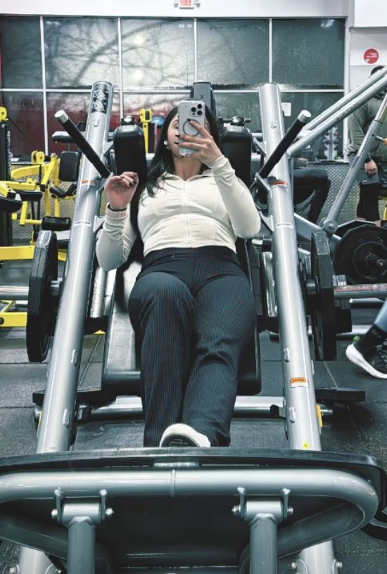

Who am I further
Beyond the code
When I'm not building, I'm usually on a plane, on a trail, or in the gym.
Places I've been
Postcards from abroad

JP
Japan

UK
London
IT
Italy

EC
Ecuador

BM
Bermuda
Around the States

MA
Boston

MA
Cape Cod
VT
Vermont

NV
Las Vegas
PA
Philadelphia
Off the keyboard
What keeps me moving
-
01 Hiking
Finding new trails and earning the view at the top.
-

Muay Thai
Pads, footwork and the discipline that comes with it.
-

Weightlifting
Steady progress, one rep at a time.